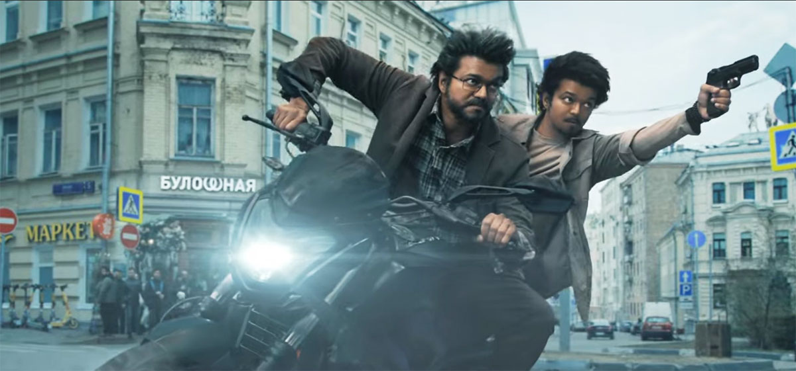

Starring: Vijay,Prasanth,Sneha,PrabhuDeva,Menakshi,Premji
Director: Venkat Prabhu
Music director: Yuvan Shankar Raja
Producers:Archana Kalpathi
Language: Tamil
Runtime: 179 minutes
Ratings: 7.8/10
Storyline: A retired Anti-Terrorism Squad agent returns to action when his past comes back to haunt him
Director Venkat Prabhu sets the tone of his Vijay-starrer GOAT (The Greatest of All Time) right from the very first scene. It’s a recovery mission for a covert team of agents led by Gandhi (Vijay) against the villain Rajiv Menon (Mohan). Gandhi, as someone the film hints about in its title, brings down the house with an action sequence laced with his unique style, but before taking the final shot at Rajiv, he is stopped by his friend, owing to the circumstances. This sequence, in a way, is a synopsis of the overall plot, and such slivers of excellence from Venkat and his team stand apart in this template film enhanced with impeccable fan service.
In GOAT, Gandhi and his Special Anti-Terrorism Squad consisting of Sunil (Prashanth), Ajay (Ajmal), Kalyan (Prabhu Deva), and their chief Nazeer (Jayaram) are seasoned agents/friends. Without their rationales milked in the name of patriotism, we see them as regular office-goers with the usual workroom banter and why Gandhi’s wife Anu (Sneha) isn’t impressed when work spills into their personal space. Unless GOAT is your very first action thriller, you know for sure that all can certainly not be good, and this is just the calm before the storm. So when tragedy finally strikes, and the film moves from 2008 to the present, the pedal hits the metal, and GOAT turns into a Chupacabra.

Despite the ensemble cast, it’s Vijay who shoulders the film in dual roles as Gandhi and his son Jeevan. And Venkat, knowing his assignment well, gives ample space for both characters to have their moments. They both care for their ménage and have their fair share of losses and a mission to complete.
. If Vijay’s Leo reminded you of multiple films, GOAT will do the same; the Vijayakanth-led Rajadurai, helmed by Vijay’s father S. A. Chandrasekhar (in which the younger character is named Vijay, I kid you not), is a film that instantly comes to mind. GOAT, at its core, is a basic revenge story, and when made to look past the glitz — which you ought to at one point or the other — you are bound to see the paint chipping away from its grand facade.
The action sequences are not exciting, the songs and background scores are disappointing, and probably the biggest pain in the neck is the antagonist played by Mohan. The character is bitterly underwritten, and the veteran cannot do much to salvage it. Not to mention how all the prominent female characters are always damsels in distress.
GOAT might let you down if you’re expecting a globe-trotting espionage thriller, or just a genre-specific entertainer along the lines of Venkat’s Maanaadu. But if you want to catch the celebration of one of our most popular stars doing everything we love in his penultimate outing — including transforming from a GOAT to a Beast — then The Greatest of All Time is worth the entry fee; even with all its drawbacks, isn’t a lion always a lion?
Rating: 0